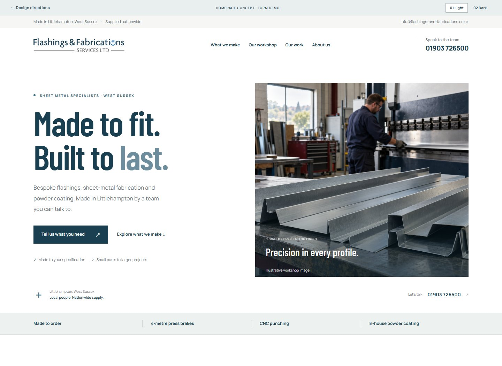
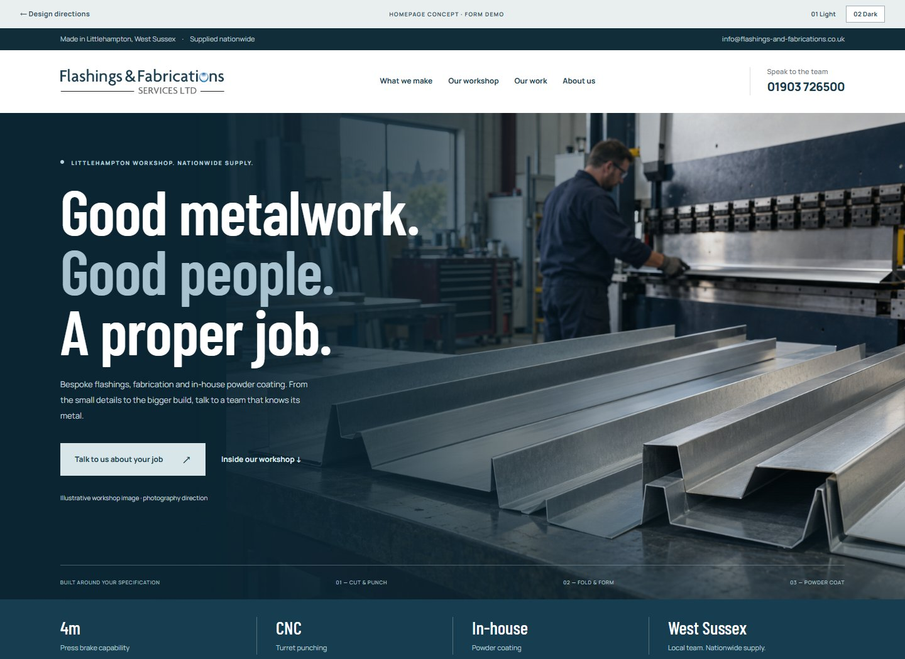

ONE LOCAL BUSINESS. TWO DISTINCT DIRECTIONS.
A better first impression.
The same hands-on business.
Modern, capable and easy to talk to. Two homepage concepts designed to turn a specific need into a straightforward conversation.

01 / LIGHT & WELCOMINGPRECISION, MADE APPROACHABLE
Made to fit. Built to last.
A bright, generous layout with deep blue-green typography, silver tones and a clear product-led journey. Feels established, personal and easy to approach.

02 / CONFIDENT & INDUSTRIALBUILT ON CAPABILITY
Good metalwork. Good people.
A photographic, darker opening with steel-blue accents and warm, light sections below. Stronger workshop presence, balanced with plain-speaking, human copy.
Confidence through specifics
Real product categories, workshop capabilities and named local projects.
Contact without pressure
A visible phone number, local address and a short form. Drawings stay optional.
Welcoming at every scale
Small components and larger projects both have a place. No corporate language.
OUR RECOMMENDATION
Lead with direction 01.
It best balances the brief’s friendly, understated feel with a substantial visual upgrade. Direction 02 is the stronger choice if workshop capability should make the first impression.
Source notes & what happens before launch ＋
These are responsive homepage design concepts, not a live replacement for the company website. The existing logo is retained; colours are sampled visually and await the original brand files. Contact details and named projects come from the current FFS website. Capabilities and enquiry priorities come from the 16 October discovery brief.
The workshop image is AI-generated using the built-in Imagegen tool, for photography direction only. It does not depict FFS or its actual staff or machinery. The same image is used in both concepts so you can compare the design. Replace it with commissioned workshop photography. Existing project photos are low resolution; source original files and confirm usage rights before launch.
Forms validate locally and demonstrate the enquiry journey; no data or files are sent. Production will need confirmed inbox routing, privacy wording, file handling, callback confirmation and spam protection. No reviews, accreditations, lead-time promises or “largest in the area” claims have been invented.